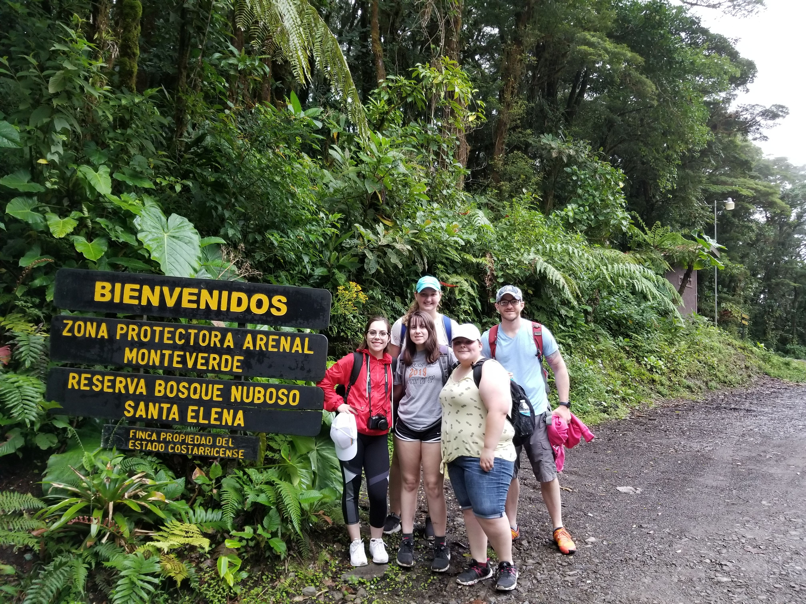

So I decided to take a trip

Fast Forward a couple decades and now I am pretty darn okayish at what I do. As a chronic sufferer of the dreaded Impostor Syndrom, that's the best compliment I will ever allow myself to give myslef. So, anyway, I know some other Spanish teacher types who have taken their students on trips to foreign countries to 'immerse themselves in the culture.' So I say to myself, why don't I take some students on a trip. I did my study abroad in Costa Rica where I lived with a lovely old lady named Miriam and went to classes for half a day. In the other half of the day I had free time to wander around and get lost in a foreign country, which, as it happens, is one of my favorite pastimes. I have always wanted to go back to Costa Rica, even toying with the idea of moving there in some capacity. So I went for it. I polled my classes to see who was interested in going on a trip with Sr. bagby to Central America and around 23 students said "Oh hell yeah, I'm totally going to go to Costa Rica with you". a year later my sister and I took 4 students to Costa Rica. Apparently the idea of saving money to do something totally awesome does not compare to buying those dope ass shoes I saw at Journey's last week.
Pura Vida, mae
So, we arrived in Costa Rica. I didn't lose any students on the way there, so that was a huge bonus. The airport experience was pretty standard. The plane lands, all the gringos disembark and work their way through customs. If you have all your necessary documentation, it's pretty easy to get through. Supposedly if you don't have your passport on you when you walk through Customs they just put you on a plane back home, where you may or may not be able to get back into the United States. I thought that was weird, but apparently some people are able to schmooze their way through the airport and get onto a flight by playing dumb all the way there. I don't know from first-hand experience, so it's whatever. We found our way through customs and into the exterior of the airport where our tour guide was waiting for us. After an hour of sitting around waiting for all the tour groups to work their way out of the airport, we went to the hotel. Our first big destination was Monteverde.
El Bosque Nuboso
There was a 'day trip'on the way to Monteverde. We stopped at a school and dropped off supplies, toured the facility, spoke to some kids. All that good stuff. My favorit part of the whole thing was recess. All the kids descended on the playground like a bunch of energetic monsters looking to run off a few hours worth of pent up energy. It's Central America, so naturally the pastime of choice was fútbol. Students and tourists alike made it to the soccer pitch, split up teams, kids vs. adults, and had the hottest, most awesome soccer match for about 30 minutes. Quick reminder, it's Central America, the tropics, so it's about 85 degrees, and 85% humidity and by the time the game was 'over', I had completely soaked my shirt and had nothing to change into. Worth it!
Volcán Arenal, edit: Croc Tour
This was the only part of the trip that was, in any way shape or form, a bust. We were supposed to take a trip to one of the most impressive live volcanoes in the Americas and hike about half way
up the cone, but Mpther Nature had different plans. It had rained off and on for a week, and then on the day of the Volcano trip, it poured buckets. An aguacero, as they say in Costa Rica. The pop-up shower was
so intense that it washed out the only road between the world and the foot of the volcano. We were at least forunate enough to have an excursion scheduled later in the day. There were about 5 buses and 5 buses worth
of tourists trapped at the foot of the volcano with the road leading away from the volcano washed out. So instead, we took the money set aside for Arenal, and put it toward a Croc tour, which completely made up for the
busted volcano trip.
While around Arenal, we did a couple more completely awesome things that are completely outside of my comfort zone. I am afraid of heights. I am afraid of falling from great heights. So, what's the most logical thing
someone with acrophobia to do? Go on a hanging bridge and ziplining tour. Heck yes, makes all the sense in the world. Again, worth it.
Playa Jacó
Another awesome 2 days of the whirlwind Costa Rica Tour were spent in a surfing town called Jacó. apparently this place is a world renowned surfing spot. I had some slight aspirations of renting a board and getting in some surf time, but that just wasn't in the stars. These trips have pretty much every hour of every day accounted for and packed with activities and or travel time to get to the activities. So while I didn't actually get to surf, I was able to spend some time swimming in the ocean. The beaches at Jacó were all volcanic sand, so they were either charcoal gray or black, but the odd thing about the volcanic sand is that it doesn't get very hot. So that was pretty cool... See what I did there?
Manuel Antonio
And now to one of my favorite parts of the trip. There's a National park in Costa Rica called Manuel Antonio. I visited there in 2005. Unofficially, we snuck in the side instead of going through the entrance. Cost us about ₡ 1000 , or $2, instead of the $20 that they charge at the entrance. when my students committed to taking the trip to Costa Rica I specifically looked for a trip that would take me back there, since it was one of the best National Parks I have ever visited, anywhere, in the whole world. This place is full of Capuchin monkeys, Howler monkeys, Quetzales, Two-toed and Three-toed sloths. It's amazing. Oh, and I kicked a shark there once, too. But that's a whole other story. This was the whipped cream on top of the trip. Everyone who went with me agreed with me in saying that it was the most beautiful place they had ever visited in their entire lives. Well worth the $20 entrance fee to get in. A lot of us checked "Seeing a wild sloth in the Costa Rican rainforest" off of our bucket lists. I'm pretty sure at least one person even cried. Might've been me.
Back to the buttcrack of the planet
As awesome as the trip was, we all knew it would have to come to an end, and then we would return to our normal old boring lives in the buttcrack of the planet. You know, that place between the Rocky Mountains and the Appalachian Mountains. The midwest, AKA, the planet's buttcrack. So here we are. I'm personally looking for my next big adventure. Another trip to another tropical Paradise. Maybe Panamá, Maybe Guatemala. I suppose I'll have to wait for the world to return to a semi- normal pre-covid state before I can make any plans to take anyone to the tropics. I think next time, it'll have to be my wife and kids. They also need to experience the wild beauty of the rainforests before we all get caught back up in our grind.